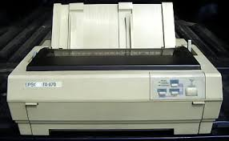

A mátrixnyomtatók a az írógépekhez nagyon hasonlók, mivel ugyanúgy tűkkel szúrja a képet a papírba.


A mátrixnyomtatók az 1980-as években kezdték el életútjukat, és azóta sokat fejlődtek. Előnyük közé tartozik a sebességük, a pontosságuk, az alacsony fenntartási költségük és az alacsony meghibásodási arány. Hátrányuk, viszont az, hogy nem képesek szép grafikákat, jó minőségű képeket nyomtatni, mellesleg kissé hangosabb a többi nyomtatótípusnál.